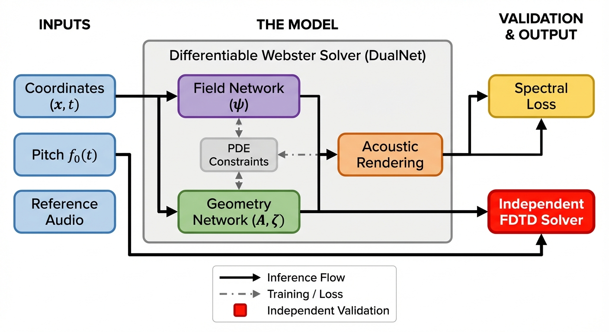
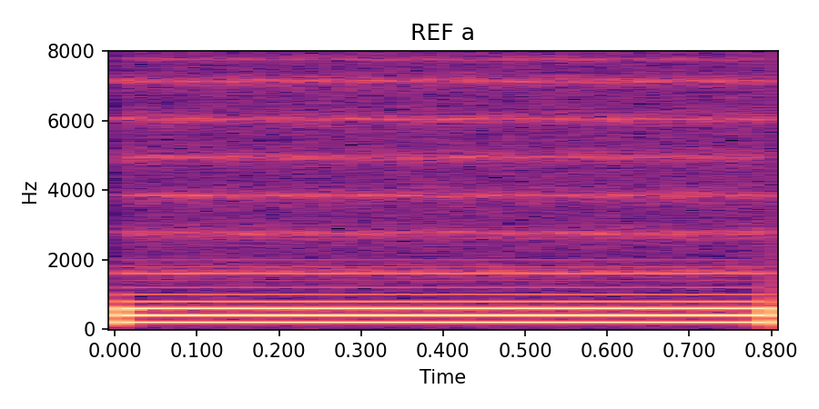
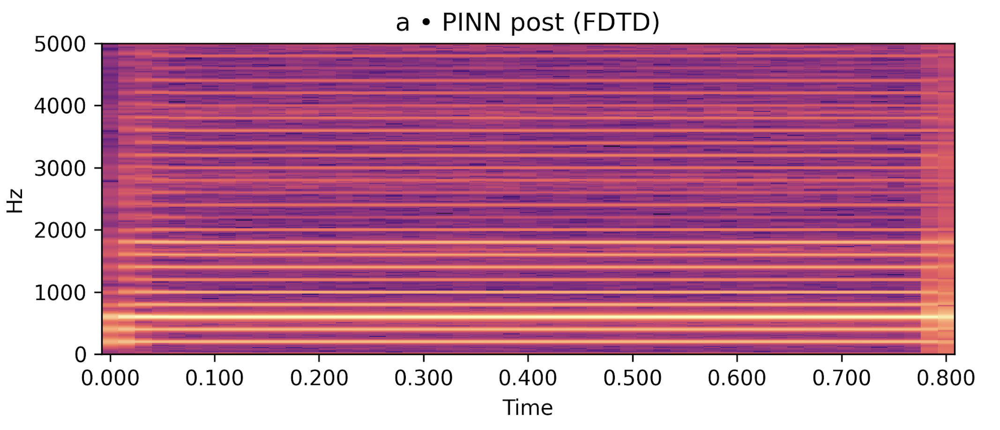
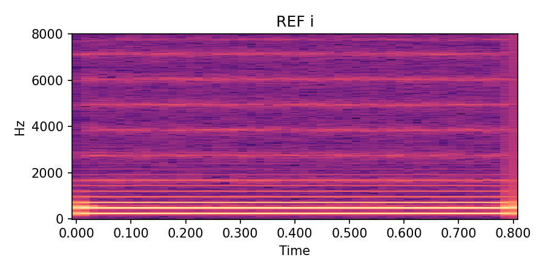
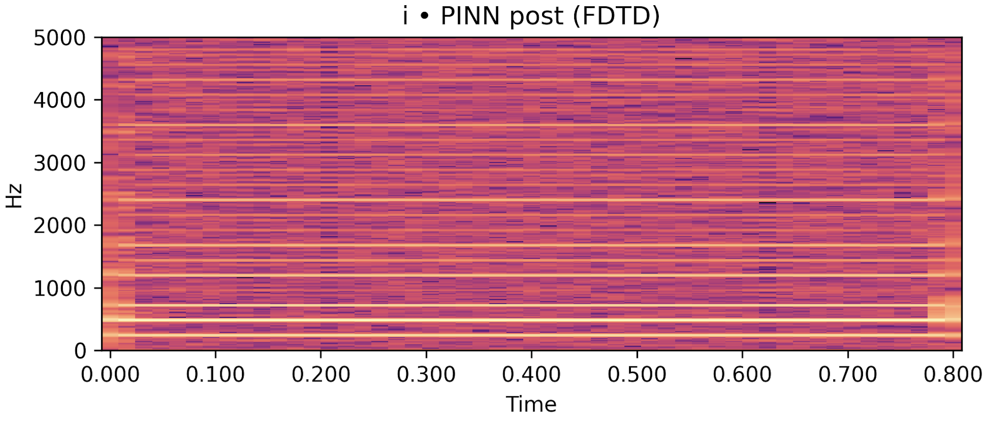
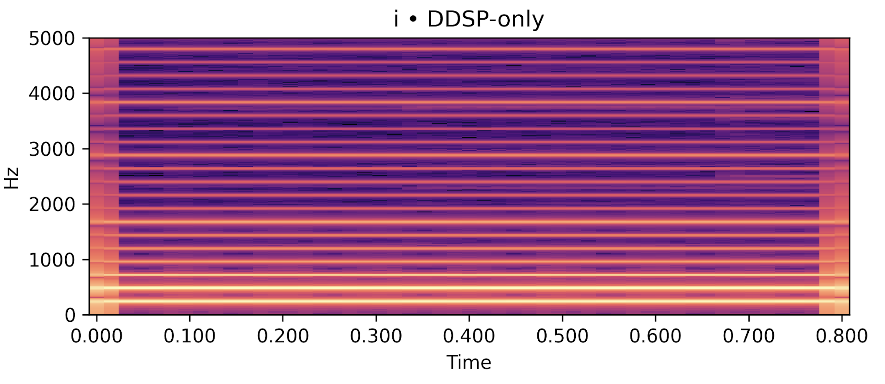
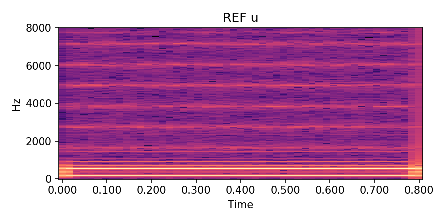
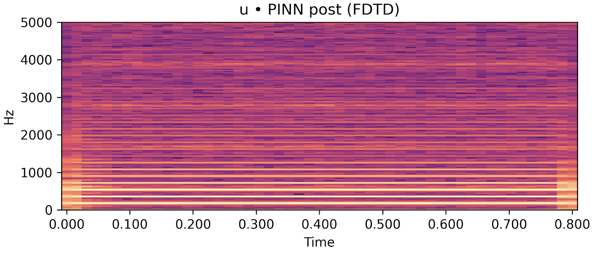
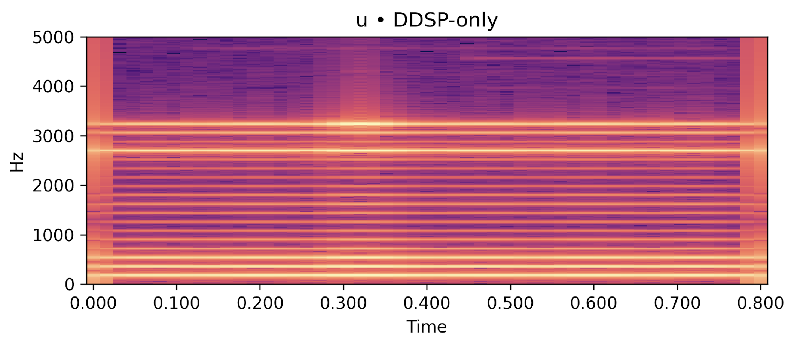

Abstract
We present a physics-informed voiced backend renderer for singing-voice synthesis. Given synthetic single-channel audio and a fund-amental--frequency trajectory, we train a time-domain Webster model as a physics-informed neural network to estimate an interpretable vocal-tract area function and an open-end radiation coefficient. Training enforces partial differential equation and boundary consistency; a lightweight DDSP path is used only to stabilize learning, while inference is purely physics-based. On sustained vowels (/a/, /i/, /u/), parameters rendered by an independent finite-difference time-domain Webster solver reproduce spectral envelopes competitively with a compact DDSP baseline and remain stable under changes in discretization, moderate source variations, and about ten percent pitch shifts. The in-graph waveform remains breathier than the reference, motivating periodicity-aware objectives and explicit glottal priors in future work.

Figure 1: Overview of the physics-informed voiced renderer. DualNet predicts $(\psi,\hat A,\hat\zeta)$ and a differentiable Webster rendering path produces $\hat y(t)$ for reference-based losses during training (inference is physics-only). Solid arrows denote forward signal flow in the renderer; dashed arrows denote training-only loss/backprop connections (e.g., using $y(t)$), which are removed at inference. For solver-independent evaluation (not shown), $(\hat A,\hat\zeta)$ are exported to an independent FDTD--Webster solver for post-render assessment.
Figure 2: Simplified overview of the proposed Webster-PINN-SVS system. A time–domain Webster PINN infers an area function \(A(x)\) and a single radiation scalar \(\zeta\) from sustained vowels; the learned parameters are then evaluated in an independent FDTD–Webster forward solver.

Figure 3: Independent FDTD Webster solver used as a physical reference for validation. This solver is not differentiable and is not part of the learning graph.
Audio Examples
Each row below shows a sustained vowel reference rendered by an FDTD–Webster forward model, together with (i) a post-rendered signal generated by re-synthesising the learned \(\hat A(x)\) and \(\hat\zeta\) in an independent solver, and (ii) a compact DDSP-only baseline conditioned on the same \(f_0(t)\) and RMS. Listening should roughly align with the quantitative trends in the paper: for /a/ and /u/, the post-render closely tracks the reference spectral envelope and periodicity while the DDSP baseline exhibits a looser envelope fit; /i/ remains more challenging under the current low-data regime.
| Vowel | Ground Truth (FDTD–Webster reference) |
Post-render (ours, FDTD with \(\hat A,\hat\zeta\)) |
DDSP-only baseline (harmonic+noise) |
|---|---|---|---|
|
/a/ steady, \(f_0 \approx 200\) Hz |

|

|

|
|
/i/ steady, \(f_0 \approx 240\) Hz |

|

|

|
|
/u/ steady, \(f_0 \approx 180\) Hz |

|

|

|
Table 1: Reference vs post-render vs DDSP-only baseline for sustained vowels. Under the present low-data configuration, the physics-guided post-render is competitive with the reference envelope on /a/ and /u/ and clearly improves upon the DDSP baseline; /i/ remains more demanding.
All files are loudness-normalised and trimmed for presentation. Listening should be done on headphones or studio monitors.
BibTeX
If you use this work, please cite:
Lu, M. and Reiss, J.D., 2026. Webster-PINN-SVS: Physics-Guided Singing Voice Synthesis with Learnable Radiation. In IEEE International Conference on Acoustics, Speech and Signal Processing (ICASSP).
@inproceedings{lu2026websterpinnsvs,
title = {Webster-PINN-SVS: Physics-Guided Singing Voice Synthesis with Learnable Radiation},
author = {Lu, Minhui and Reiss, Joshua D.},
booktitle = {Proc. IEEE Int. Conf. on Acoustics, Speech and Signal Processing (ICASSP)},
year = {2026}
}